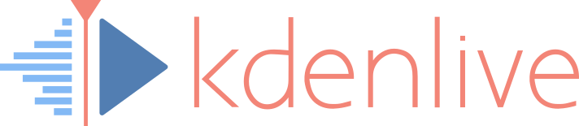

Productiviteit
Dit zijn programma's om je productiviteit hoger te maken.
Vim (FOSS)
Vim (Vi IMproved) is een terminal text editor. Voor Windows bestaat gVim. Dat is Vim met een GUI zodat je het niet per se in je terminal hoeft te gebruiken. Vim is ook zeer handig voor Linux. Veel mensen vinden VSCode ook fijn.

Visual Studio Code (FOSS)
Visual studio Code (VSCode) is een text editor, vooral om te programmeren.

OBS Studio (FOSS)
OBS is een manier hoe je video kan opnemen en streamen (met Twitch bijvoorbeeld). Discord heeft ook OBS ingebouwd.

DeepL (FOSS)
DeepL is een translater net als Google Translate, maar is soms wat precieser. Installeren is onnodig, gebruik het gewoon in je browser.
Bitwarden (FOSS)
Bitwarden is een password manager en beveiligt en onthoud je wachtwoorden. Het is veel veiliger dan alles op te slaan in je browser en je kan synchroniseren naar andere PC's. Ze hebben ook een extension: deze voor Chromium based browsers en deze voor Firefox.

Thunderbird (FOSS)
Thunderbird is een mail client, gemaakt door Mozilla (Mozilla heeft ook Firefox gemaakt). Het heeft veel features en je kan add-ons installeren net als Firefox.
LibreOffice (FOSS)
LibreOffice (libre betekend vrij/gratis) is een office alternatief voor Microsoft Office. Het kan niet online, maar heeft meer opties dan Microsoft Office en is gratis. Kan ook worden gebruikt op Linux. OnlyOffice (FOSS) is ook zeer goed.

Blender (FOSS)
Met Blender kan je 3D animaties maken.

GIMP (FOSS)
GIMP (GNU Image Manipulation Program) is een foto bewerk programma. GIMP is vooral voor Linux, maar is ook één van de beste op Windows (misschien beetje moeilijk in het begin). Het lijkt erg op Paint, maar het is sneller en heeft meer features.

Kdenlive (FOSS)
Kdenlive is een open source video editor, gemaakt door KDE.
